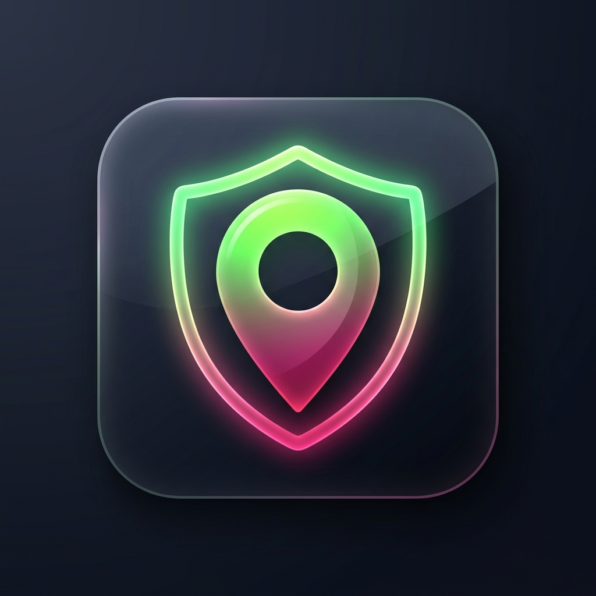

Avoids poorly lit areas & crime zones.
Might pass through risk zones.
Generating safety analysis...
Call these numbers for immediate public assistance.
These contacts will receive an SMS with your live location if SOS is triggered.
Pin a safety issue at your current location.
How safe did you feel on this route?